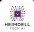
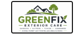

Partner With Us
Whether you're an employer, a referral organisation, or a funder or commissioner — there's a way to partner with RemoteAbility's Pathway to Independence.
Companies Already Hiring Our Graduates
Graduates of our Pathway to Independence Programme go on to real, paid roles with trusted employer partners.

Heimdell Tech AI
Brings graduates into Sales & Business Development roles, putting the Sales skills from our Ready and Independent stages straight to work.

GreenFix Exterior Care
Brings graduates into exterior maintenance roles — a hands-on, flexible route into steady, paid work.
Three Ways to Work With RemoteAbility
Employers
Access trained, remote-ready teams in Sales and AI Systems from our Ready and Independent stages — or hire graduates directly.
- Commission-based or project pilots
- Part-time or full-time placements
- Direct hire of graduates
- Ongoing supervision and quality assurance
Referral Partners
If you work with people who are sleeping rough, at risk of homelessness, in recovery, disabled or neurodivergent, refer them to us.
- Simple referral form and process
- Coordinated, active navigation — not a hand-off
- Updates where consent allows
- Works alongside your existing support
Funders & Commissioners
Help fund or commission delivery of the Pathway to Independence, aligned to national homelessness and social value priorities.
- Aligned to the National Plan to End Homelessness
- Transparent, measurable outcome reporting
- Social Value Act and ESG-aligned
- Flexible commissioning models
From Discovery to Delivery in 3 Steps
Discovery Call
We discuss your needs — whether that's hiring, referring, or commissioning — and any regulatory requirements. No obligation, no cost.
- Understand your goals and challenges
- Review technical or referral requirements
- Discuss compliance and safeguarding (if relevant)
- Explore social value and reporting needs
Pilot or First Referral
Start with a defined, time-limited project or your first referral. Clear success measures, regular reporting, quality assurance included.
- 4-6 week pilot project (employers)
- Supervised remote team assigned (employers)
- Active navigation begins (referrals)
- Weekly or milestone reporting
Scale & Extend
Build on what works. Expand successful campaigns, extend referral routes, or move to longer-term commissioning.
- Extend pilot into ongoing engagement
- Scale up team size, referral volume, or scope
- Direct hire or commissioning options available
- Long-term partnership and support
"Working with RemoteAbility allowed us to scale our outreach while making a real difference to people's lives. The quality of work was excellent, and the social impact reporting made it easy to demonstrate value to our board."
Organisations Partnering With RemoteAbility
🏛️ Local Authorities & Councils
Referral routes and social value delivery for housing and homelessness services
🏠 Housing Providers
Coordinated support for tenants and residents moving towards independence
🌱 Charities & Support Organisations
Mission-aligned referral partnerships with impact reporting
🩺 Health & Recovery Services
Coordinated referrals for people needing mental-health or addiction-recovery support
💼 Employers
Hire graduates of our Pathway to Independence and give someone a genuine second chance
💷 Funders & Commissioners
Outcome-based commissioning aligned to national homelessness priorities
Partnership FAQs
How much does it cost to partner with RemoteAbility?
It depends on the type of partnership. Referral partnerships are free. Employer engagements are priced per project or retainer. Commissioned delivery for funders is agreed per contract. Book a free discovery call and we'll provide a tailored quote.
What can RemoteAbility deliver as a service provider?
Our trained teams can deliver remote sales and lead generation, and AI-powered automation and workflow builds — drawn from participants at the Ready and Independent stages of our pathway.
How do I refer someone who needs support?
Use our dedicated Refer Someone page. It only takes a few minutes, and we'll follow up directly with the person (or you, if appropriate) within 2 working days — 24 hours for urgent safety concerns.
How does this help with social value or homelessness reporting?
We provide impact reports covering housing, recovery and employment outcomes, hours worked, skills developed, and wellbeing improvements — supporting Social Value Act compliance, ESG reporting, and alignment with the National Plan to End Homelessness.
Are RemoteAbility's teams supervised and quality-checked?
Yes. All our team members receive structured training, ongoing mentoring, and quality oversight. We provide regular performance reports and a dedicated account contact for your partnership.